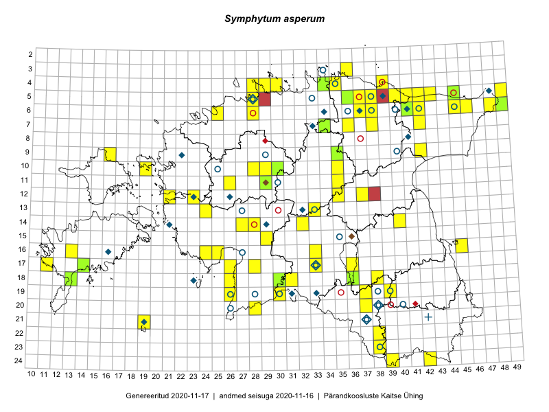

Symphytum asperum
Uuendatud: 2016-12-07
Kaardile koondatud taksonid: Symphytum asperum Lepech.

Kaart põhineb 129 kirjel, neist vaatlusi 127 ja eksemplare 2. Taksonit on leitud 68 ruudust.
| Ruut | Vaatleja(d) | Vaatlusaeg | Kirje tüüp | Viide andmebaasikirjele |
|---|---|---|---|---|
| 19-30 | Peedu Saar, Liina Oja | 2015-05-22 | ruut/ala | vaata PlutoFis |
| 19-30 | Peedu Saar, Liina Oja | 2015-05-22 | punkt | vaata PlutoFis |
| 16-24 | Peedu Saar, Liina Oja | 2015-05-21 | ruut/ala | vaata PlutoFis |
| 16-24 | Peedu Saar, Liina Oja | 2015-05-21 | punkt | vaata PlutoFis |
| 16-25 | Peedu Saar, Liina Oja | 2015-05-21 | ruut/ala | vaata PlutoFis |
| 16-25 | Peedu Saar, Liina Oja | 2015-05-21 | punkt | vaata PlutoFis |
| 18-26 | Peedu Saar, Liina Oja | 2015-05-20 | ruut/ala | vaata PlutoFis |
| 18-26 | Peedu Saar, Liina Oja | 2015-05-20 | punkt | vaata PlutoFis |
| 07-42 | Peedu Saar, S. Laherand | 2015-06-01 | punkt | vaata PlutoFis |
| 05-45 | Tiit Hallikma, Toomas Kukk | 2015-07-21 | ruut/ala | vaata PlutoFis |
| 05-49 | Tiit Hallikma, Toomas Kukk | 2015-07-22 | ruut/ala | vaata PlutoFis |
| 05-49 | Tiit Hallikma, Toomas Kukk | 2015-07-22 | punkt | vaata PlutoFis |
| 09-16 | Toomas Kukk, Eerik Leibak | 2015-08-11 | ruut/ala | vaata PlutoFis |
| 09-16 | Toomas Kukk, Eerik Leibak | 2015-08-11 | punkt | vaata PlutoFis |
| 16-45 | Toomas Kukk, Eerik Leibak | 2015-07-29 | ruut/ala | vaata PlutoFis |
| 07-42 | Peedu Saar, Sander Laherand | 2015-06-01 | ruut/ala | vaata PlutoFis |
| 06-41 | Toomas Kukk, Tiit Hallikma | 2015-07-24 | ruut/ala | vaata PlutoFis |
| 05-45 | Toomas Kukk, Tiit Hallikma | 2015-07-21 | punkt | vaata PlutoFis |
| 16-45 | Toomas Kukk, Eerik Leibak | 2015-07-29 | punkt | vaata PlutoFis |
| 11-29 | Toomas Kukk, Tiit Hallikma | 2015-06-11 | ruut/ala | vaata PlutoFis |
| 10-29 | Tiit Hallikma, Toomas Kukk | 2015-06-11 | ruut/ala | vaata PlutoFis |
| 10-29 | Tiit Hallikma, Toomas Kukk | 2015-06-11 | punkt | vaata PlutoFis |
| 06-45 | Thea Kull, Peedu Saar | 2015-04-26 | punkt | vaata PlutoFis |
| 06-48 | Thea Kull, Peedu Saar | 2015-04-26 | punkt | vaata PlutoFis |
| 05-37 | Rein Kalamees, Kersti Püssa | 2015-08-15 | ruut/ala | vaata PlutoFis |
| 05-37 | Rein Kalamees, Kersti Püssa | 2015-08-15 | punkt | vaata PlutoFis |
| 06-45 | Thea Kull, Peedu Saar | 2015-04-26 | ruut/ala | vaata PlutoFis |
| 06-48 | Ott Luuk, Hannes Pehlak | 2015-07-21 | ruut/ala | vaata PlutoFis |
| 22-38 | Peedu Saar | 2015-10-01 | ruut/ala | vaata PlutoFis |
| 22-38 | Peedu Saar | 2015-10-01 | punkt | vaata PlutoFis |
| 18-38 | Toomas Kukk, Peedu Saar, Mall Värva, Sander Laherand | 2014-07-27 | ruut/ala | vaata PlutoFis |
| 14-28 | Ott Luuk, Hannes Pehlak | 2015-06-10 | ruut/ala | vaata PlutoFis |
| 18-31 | Ott Luuk, Indrek Tammekänd | 2015-05-22 | ruut/ala | vaata PlutoFis |
| 07-34 | Jana-Maria Habicht, Ester Valdvee | 2015-07-20 | ruut/ala | vaata PlutoFis |
| 18-38 | Toomas Kukk, Sander Laherand, Peedu Saar | 2014-07-27 | punkt | vaata PlutoFis |
| 20-28 | Ott Luuk, Eerik Leibak, Liisa Rennel | 2015-05-20 | ruut/ala | vaata PlutoFis |
| 11-26 | Toomas Kukk | 2014-06-11 | ruut/ala | vaata PlutoFis |
| 11-29 | Ott Luuk, Toivo Sepp | 2015-05-18 | punkt | vaata PlutoFis |
| 20-28 | Ott Luuk, Eerik Leibak, Liisa Rennel | 2015-05-20 | punkt | vaata PlutoFis |
| 11-29 | Ott Luuk, Toivo Sepp | 2015-08-20 | ruut/ala | vaata PlutoFis |
| 14-32 | Maria Abakumova, Helle Mäemets | 2015-07-01 | ruut/ala | vaata PlutoFis |
| 16-33 | Maria Abakumova | 2015-06-09 | ruut/ala | vaata PlutoFis |
| 05-28 | Erkki Otsman, Sergei Smirnov | 2015-06-26 | ruut/ala | vaata PlutoFis |
| 17-33 | Maria Abakumova, Helle Mäemets | 2015-07-03 | ruut/ala | vaata PlutoFis |
| 18-30 | Ulvi Selgis | 2015-08-30 | punkt | vaata PlutoFis |
| 09-42 | Timo Luhamäe, Liina Oja | 2015-05-14 | punkt | vaata PlutoFis |
| 09-42 | Timo Luhamäe, Liina Oja | 2015-05-14 | ruut/ala | vaata PlutoFis |
| 16-33 | Maria Abakumova | 2015-06-09 | punkt | vaata PlutoFis |
| 16-33 | Maria Abakumova | 2015-06-09 | punkt | vaata PlutoFis |
| 12-35 | Ott Luuk, Liina Oja | 2015-05-11 | ruut/ala | vaata PlutoFis |
| 05-28 | Erkki Otsman, Sergei Smirnov | 2015-06-29 | punkt | vaata PlutoFis |
| 11-26 | Aat Sarv | 2015-07-21 | ruut/ala | vaata PlutoFis |
| 07-42 | Mari Metsoja, Jaak-Albert Metsoja | 2015-07-23 | ruut/ala | vaata PlutoFis |
| 06-42 | Mari Metsoja, Jaak-Albert Metsoja | 2015-07-21 | ruut/ala | vaata PlutoFis |
| 17-26 | Meeli Mesipuu | 2015-05-21 | ruut/ala | vaata PlutoFis |
| 06-25 | Mari Metsoja, Jaak-Albert Metsoja | 2015-07-25 | ruut/ala | vaata PlutoFis |
| 05-38 | Kersti Püssa, Rein Kalamees | 2015-08-11 | ruut/ala | vaata PlutoFis |
| 17-26 | Meeli Mesipuu | 2015-05-21 | punkt | vaata PlutoFis |
| 18-36 | Helle Mäemets, Mare Leis | 2015-06-24 | ruut/ala | vaata PlutoFis |
| 05-42 | Kaili Orav, Silvia Pihu | 2015-06-18 | ruut/ala | vaata PlutoFis |
| 05-42 | Kaili Orav, Silvia Pihu | 2015-06-18 | punkt | vaata PlutoFis |
| 04-39 | Kaili Orav, Silvia Pihu | 2015-06-19 | ruut/ala | vaata PlutoFis |
| 04-39 | Kaili Orav, Silvia Pihu | 2015-06-19 | punkt | vaata PlutoFis |
| 06-38 | Kaili Orav, Silvia Pihu | 2015-07-20 | ruut/ala | vaata PlutoFis |
| 11-29 | Ott Luuk, Toivo Sepp | 2015-08-20 | punkt | vaata PlutoFis |
| 18-31 | Ott Luuk, Indrek Tammekänd | 2015-05-22 | punkt | vaata PlutoFis |
| 12-35 | Ott Luuk, Liina Oja | 2015-05-11 | punkt | vaata PlutoFis |
| 12-35 | Ott Luuk, Liina Oja | 2015-05-11 | punkt | vaata PlutoFis |
| 06-38 | Kaili Orav, Silvia Pihu | 2015-07-20 | punkt | vaata PlutoFis |
| 18-36 | Helle Mäemets, Mare Leis | 2015-06-24 | punkt | vaata PlutoFis |
| 12-37 | Ulvi Selgis | 2016-05-26 | ruut/ala | vaata PlutoFis |
| 19-26 | Peedu Saar, Thea Kull | 2016-06-07 | ruut/ala | vaata PlutoFis |
| 19-26 | Thea Kull, Peedu Saar | 2016-06-07 | punkt | vaata PlutoFis |
| 13-24 | Indrek Tammekänd, Jana Galadi | 2016-05-17 | punkt | vaata PlutoFis |
| 24-42 | Rein Kalamees, Eerik Leibak | 2016-06-14 | ruut/ala | vaata PlutoFis |
| 24-42 | Rein Kalamees, Eerik Leibak | 2016-06-14 | punkt | vaata PlutoFis |
| 23-38 | Rein Kalamees, Eerik Leibak | 2016-06-16 | punkt | vaata PlutoFis |
| 23-38 | Rein Kalamees, Eerik Leibak | 2016-06-16 | ruut/ala | vaata PlutoFis |
| Silvia Pihu | 2015-07-01 | punkt | vaata PlutoFis | |
| 19-37 | Liina Oja, Maret Gerz | 2016-06-17 | punkt | vaata PlutoFis |
| 20-37 | Liina Oja, Maret Gerz | 2016-06-17 | punkt | vaata PlutoFis |
| 24-39 | Liina Oja, Maret Gerz | 2016-06-14 | punkt | vaata PlutoFis |
| 24-39 | Maret Gerz, Liina Oja | 2016-06-14 | ruut/ala | vaata PlutoFis |
| 20-28 | Peedu Saar, Ott Luuk | 2016-06-09 | ruut/ala | vaata PlutoFis |
| 19-37 | Maret Gerz, Liina Oja | 2016-06-16 | ruut/ala | vaata PlutoFis |
| 20-37 | Maret Gerz, Liina Oja | 2016-06-16 | ruut/ala | vaata PlutoFis |
| 12-21 | Liina Oja, Rein Kalamees | 2016-07-05 | punkt | vaata PlutoFis |
| 07-38 | Liina Oja, Eerik Leibak | 2016-07-28 | ruut/ala | vaata PlutoFis |
| 04-30 | Sander Laherand, Eerik Leibak | 2016-07-29 | ruut/ala | vaata PlutoFis |
| 09-35 | Toomas Kukk, Tiit Hallikma | 2016-07-25 | ruut/ala | vaata PlutoFis |
| 17-36 | Rein Kalamees, Kersti Püssa | 2016-07-20 | punkt | vaata PlutoFis |
| 05-43 | Erkki Otsman, Sergei Smirnov | 2016-06-17 | ruut/ala | vaata PlutoFis |
| 06-46 | Erkki Otsman, Sergei Smirnov | 2016-06-17 | ruut/ala | vaata PlutoFis |
| 07-36 | Thea Kull, Timo Luhamäe | 2016-07-27 | ruut/ala | vaata PlutoFis |
| 19-39 | Tarmo Niitla, Peedu Saar | 2016-06-13 | punkt | vaata PlutoFis |
| 04-30 | Sander Laherand, Eerik Leibak | 2016-07-29 | punkt | vaata PlutoFis |
| 07-38 | Liina Oja, Eerik Leibak | 2016-07-28 | punkt | vaata PlutoFis |
| 07-38 | Liina Oja, Eerik Leibak | 2016-07-28 | punkt | vaata PlutoFis |
| 11-35 | Timo Luhamäe, Peedu Saar | 2016-07-21 | punkt | vaata PlutoFis |
| 06-37 | Karin Kikas, Elle Rajandu | 2016-06-28 | punkt | vaata PlutoFis |
| 14-40 | Karin Kikas, Elle Rajandu | 2016-07-01 | punkt | vaata PlutoFis |
| 14-27 | Indrek Tammekänd | 2016-08-31 | punkt | vaata PlutoFis |
| 10-28 | Timo Luhamäe, Peedu Saar | 2016-07-06 | punkt | vaata PlutoFis |
| 04-29 | Sander Laherand, Tõnu Ploompuu, Nele Jõessar | 2016-07-25 | ruut/ala | vaata PlutoFis |
| 12-23 | Mari Reitalu, Oliver Parrest | 2016-07-05 | ruut/ala | vaata PlutoFis |
| 05-43 | Erkki Otsman, Sergei Smirnov | 2016-06-17 | punkt | vaata PlutoFis |
| 12-23 | Mari Reitalu, Oliver Parrest | 2016-07-05 | punkt | vaata PlutoFis |
| 06-25 | Peedu Saar, Ott Luuk | 2016-09-06 | ruut/ala | vaata PlutoFis |
| 05-38 | Kersti Püssa, Rein Kalamees | 2015-08-11 | punkt | vaata PlutoFis |
| 21-19 | Ott Luuk, Meeli Mesipuu | 2016-09-10 | punkt | vaata PlutoFis |
| 10-19 | Ott Luuk, Meeli Mesipuu | 2016-09-15 | punkt | vaata PlutoFis |
| 11-35 | Peedu Saar, Timo Luhamäe | 2016-07-21 | ruut/ala | vaata PlutoFis |
| 04-29 | Sander Laherand, Tõnu Ploompuu, Nele Jõessar | 2016-07-25 | punkt | vaata PlutoFis |
| 05-41 | Tiit Hallikma, Tõnu Ploompuu | 2016-07-26 | punkt | vaata PlutoFis |
| 05-42 | Tiit Hallikma, Tõnu Ploompuu | 2016-07-26 | punkt | vaata PlutoFis |
| 05-42 | Tiit Hallikma, Tõnu Ploompuu | 2016-07-26 | ruut/ala | vaata PlutoFis |
| 05-41 | Tiit Hallikma, Tõnu Ploompuu | 2016-07-26 | ruut/ala | vaata PlutoFis |
| 09-35 | Tiit Hallikma, Toomas Kukk | 2016-07-25 | punkt | vaata PlutoFis |
| 10-35 | Tiit Hallikma, Toomas Kukk | 2016-07-25 | punkt | vaata PlutoFis |
| 10-28 | Peedu Saar, Timo Luhamäe, Johannes Kõdar | 2016-07-06 | ruut/ala | vaata PlutoFis |
| 13-33 | Ott Luuk, Indrek Tammekänd | 2016-07-21 | ruut/ala | vaata PlutoFis |
| 06-25 | Ott Luuk, Peedu Saar | 2016-09-06 | punkt | vaata PlutoFis |
| 15-29 | Elle Rajandu, Tiit Hallikma | 2016-07-21 | ruut/ala | vaata PlutoFis |
| 20-28 | Ott Luuk, Peedu Saar | 2016-06-09 | punkt | vaata PlutoFis |
| 20-28 | Ott Luuk, Peedu Saar | 2016-06-09 | punkt | vaata PlutoFis |
| 04-35 | Ott Luuk, Sander Laherand, Nele Jõessar | 2016-07-26 | punkt | vaata PlutoFis |
| 05-38 | Hannes Pehlak, Toomas Kukk, Susanna Vain | 2016-07-28 | ruut/ala | vaata PlutoFis |
| 06-48 | Peedu Saar, Thea Kull | 2015-04-26 | eksemplar | vaata PlutoFis |
| 07-34 | Jana-Maria Habicht | 2015-07-20 | eksemplar | vaata PlutoFis |